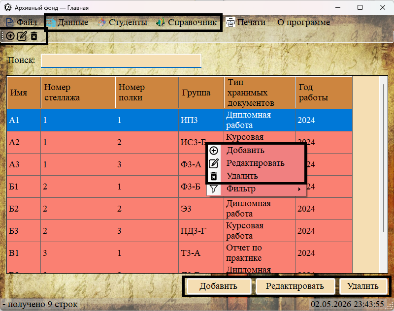
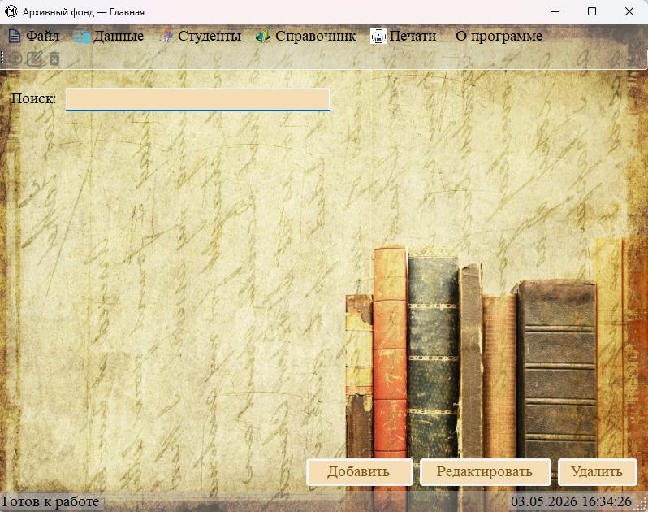
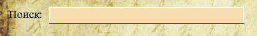
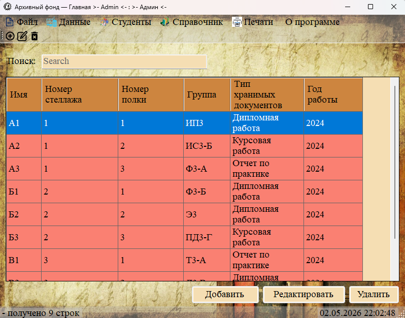
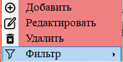
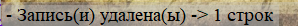
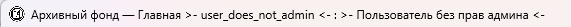
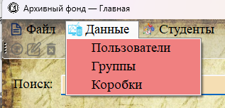

После успешной авторизации открывается главное окно программы «Архивный фонд». Здесь сосредоточены все основные функции для работы с архивными данными.

Рис. 1. Главное окно приложения (основные зоны)
1. Главное меню (верхняя панель)

Рис. 2. Главное меню программы
Главное меню содержит следующие пункты:
— Файл — завершение работы с приложением (пункт «Выход»).
— Данные — переход к разделам: «Пользователи» (только для администратора), «Группы», «Коробки».
— Студенты — работа со студентами, персональными файлами и документами (5 подразделов).
— Справочник — управление типами документов.
— Печати — формирование отчётов и навигационных файлов.
— О программе — вызов справочной системы (открытие CHM-файла).
2. Панель инструментов
Рис. 3. Панель инструментов с кнопками быстрого доступа
Содержит три кнопки для выполнения основных операций:
— Добавить — открывает форму для создания новой записи.
— Редактировать — открывает форму для изменения выбранной записи (доступно только при выделении одной строки).
— Удалить — удаляет выделенные записи (доступно при выделении одной или нескольких строк).
3. Строка поиска

Рис. 4. Строка полнотекстового поиска
Поле ввода с подписью «Поиск:» позволяет выполнять полнотекстовый поиск по всем видимым полям текущей таблицы. Поиск происходит в реальном времени — по мере ввода символов таблица автоматически фильтруется.
4. Таблица данных

Рис. 5. Таблица с данными (на примере раздела «боксы»)
Основная рабочая область программы. Особенности таблицы:
— Первый столбец (идентификатор записи) скрыт.
— Заголовки столбцов имеют цветовое выделение.
— Возможен множественный выбор строк (для массового удаления).
— При щелчке правой кнопкой мыши открывается контекстное меню.
— Даты отображаются в формате «ГГГГ».
5. Контекстное меню

Рис. 6. Контекстное меню, вызываемое правым кликом по таблице
Доступные пункты:
— Добавить — аналогично кнопке на панели инструментов.
— Редактировать — аналогично кнопке на панели инструментов.
— Удалить — аналогично кнопке на панели инструментов.
— Фильтр — открывает подменю для фильтрации строк по значениям выбранного столбца (подробнее в разделе 2.1.3).
6. Статусная строка

Рис. 7. Статусная строка в нижней части окна
В статусной строке отображается:
— Слева — сообщения о текущем состоянии («Готов к работе»), количестве загруженных записей, результате операций («Запись добавлена», «Запись обновлена», «Записи удалены»).
— Справа — текущая дата и время (обновляются каждую секунду).
7. Кнопки управления внизу окна
Рис. 8. Кнопки «Добавить», «Редактировать», «Удалить» в нижней части окна
Дублируют функционал панели инструментов и контекстного меню, размещены для удобства пользователя.
Особенности отображения в зависимости от роли пользователя
В правой части заголовка окна отображается логин и ФИО текущего пользователя:

Рис. 9. Заголовок окна с информацией о вошедшем пользователе
Для пользователя с ролью «Администратор» становится видимым пункт меню «Пользователи» в разделе «Данные» (для управления учётными записями).

Рис. 10. Пункт меню «Пользователи» виден только администратору